Business websites
To say who you are, what you offer and how to reach you. Fast, great on mobile and easy to find on Google.
from $1,600 : build a quote
Custom websites and web apps
From a business website to a tool with a dashboard and logins: we design, build, launch and look after the server. You talk directly to the people who make it.
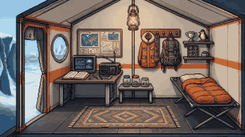
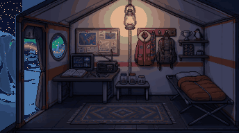
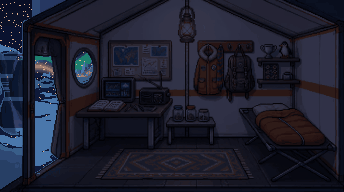


Every project is built from scratch, around the way your business works.
To say who you are, what you offer and how to reach you. Fast, great on mobile and easy to find on Google.
from $1,600 : build a quote
Order forms, calculators, customer logins and a dashboard to keep track of it all. Your website stops being a shop window and becomes part of the work.
from $5,500 : build a quote
Web apps that sit on the phone's home screen like any other app and even open offline, with no app store in between.
from $8,000 : build a quote
Domain, security padlock (HTTPS), server and backups. You don't need to understand any of it.
Care includes updates and small text and photo changes. Pay for the year and get 2 months free.
Reference prices to start the conversation. The final quote, in writing, depends on what goes into the project. Domain registration (about $15 a year) is paid separately.
Real websites, in use right now. Go ahead and try them.
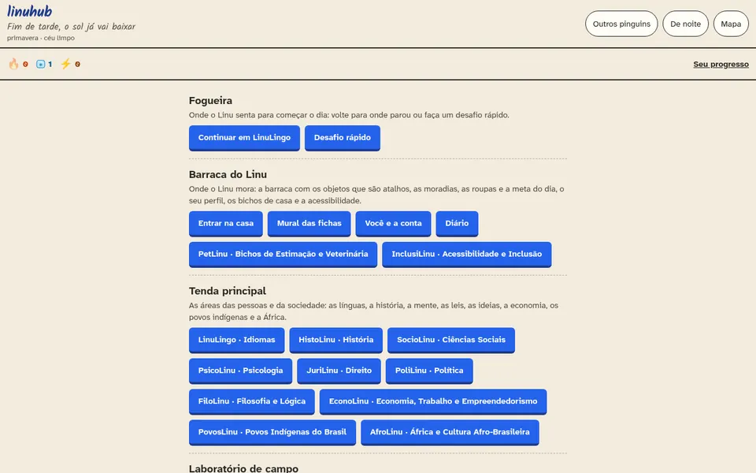
Installable app
Language app and playable encyclopedia, with 197 languages and 39 areas of knowledge. Works offline on phones and computers.
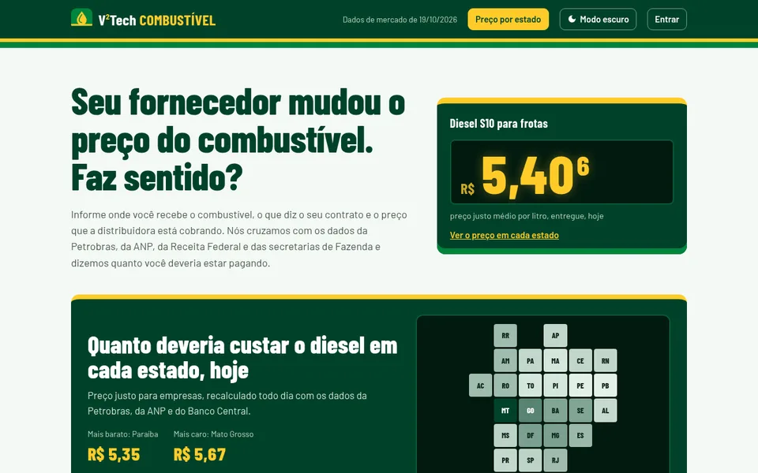
Business tool
Checks whether the diesel, gasoline or ethanol price a supplier charges makes sense, cross-checking data from Petrobras, Brazil's fuel regulator and its tax authority.
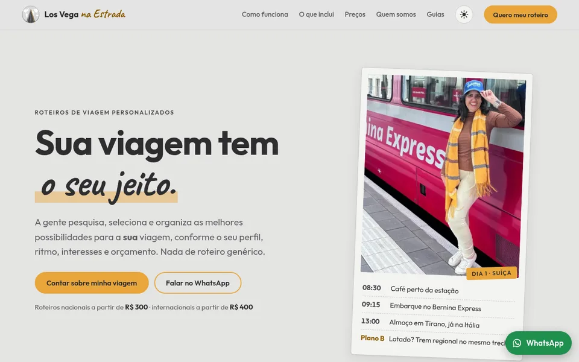
Sales website with dashboard
Tailor-made travel itineraries: the customer describes the trip and sees the price straight away; requests land in a dashboard with a ready-made WhatsApp reply.
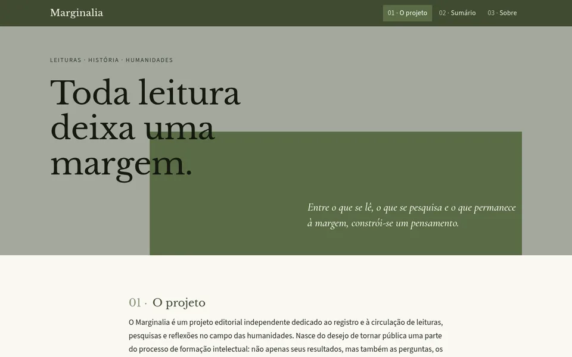
Digital publication
Independent History and humanities magazine, with contents, search, notes in the margin and ready-to-copy citations.
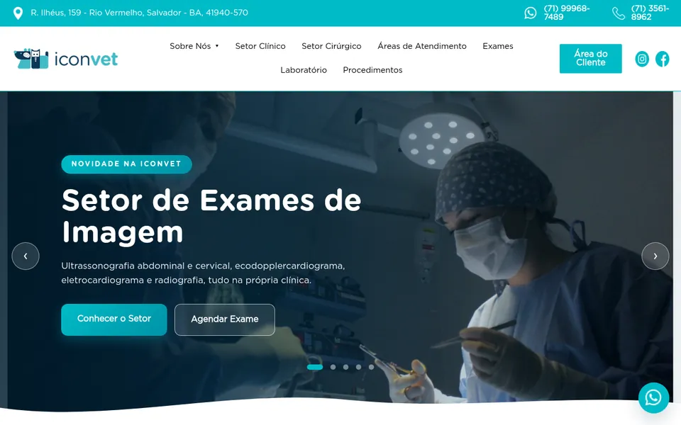
Company website
Veterinary clinic in Salvador, Brazil: departments, tests, services and specialties across 74 pages, with WhatsApp and directions one tap away.
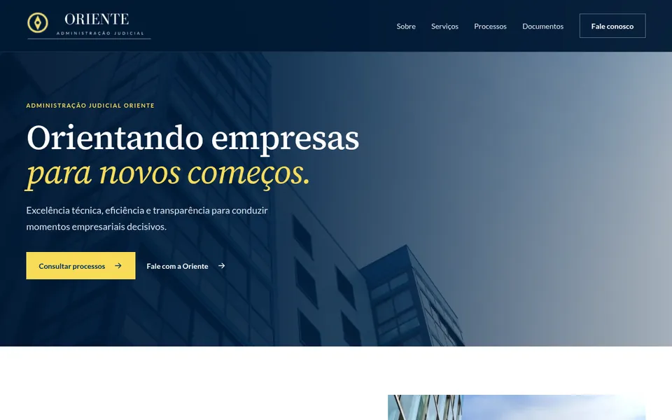
Website with case lookup
Insolvency administration in Rio de Janeiro: practice areas, case lookup by company, document templates and contact.
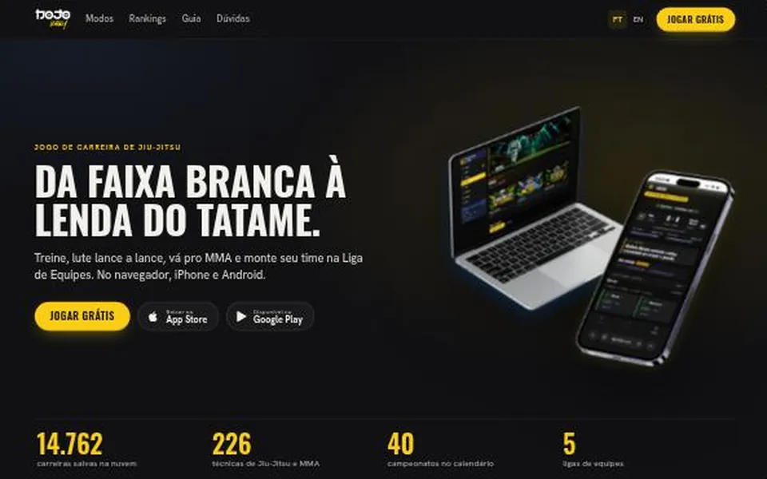
Browser and mobile game
Jiu-Jitsu and MMA career game, free in the browser, on iPhone and on Android, with PvP, team leagues and live rankings.
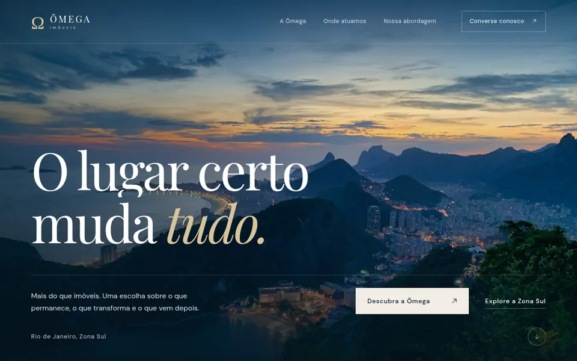
Business website
Real estate agency in Rio's South Zone, on a one-page website that presents how they work and the neighborhoods they cover.
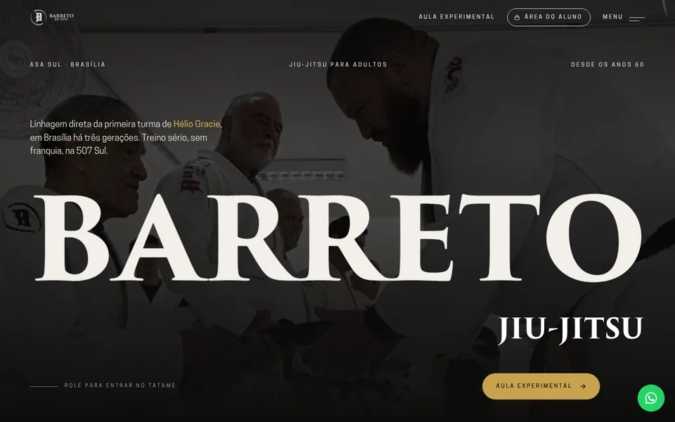
Business website
Jiu-Jitsu team for adults in Brasília's 507 Sul, on a one-page website that tells three generations of history and leads to a free trial class.
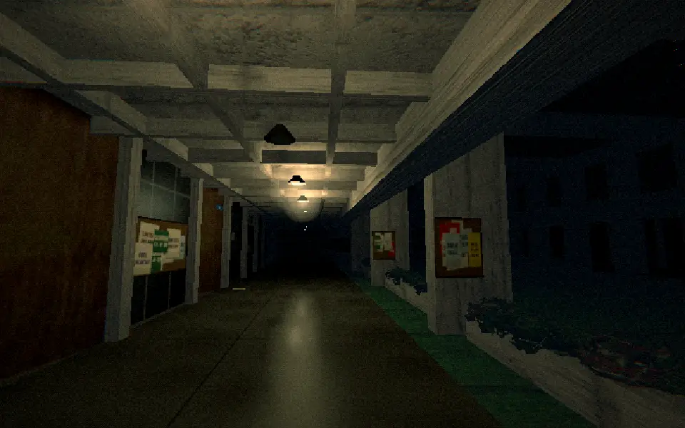
Browser horror game
First-person horror game set in the Minhocão, the ICC of the University of Brasília, free in the browser on computer and phone. It blends fiction with the university’s real history under the dictatorship. Ages 14 and up.
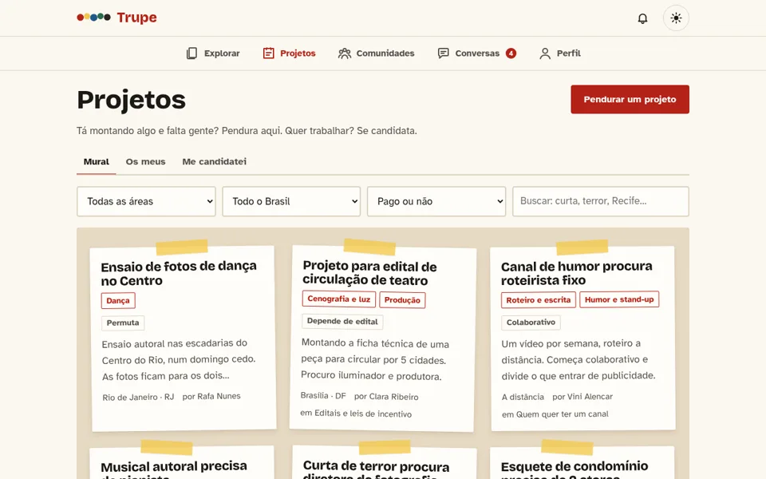
Network for artists
A network where artists from every discipline find each other and make projects together: a project board, communities and real-time conversations. In preview.
Projects I made at university. The companies are fictional; the code is open source.
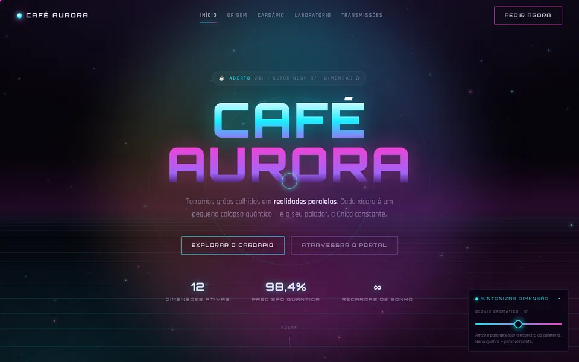
Website with effects
A cyberpunk café that doesn't exist, with an intro screen, animated background, menu and a lab to build your drink. It's the website in the simulator above, also in Bootstrap and Tailwind versions.
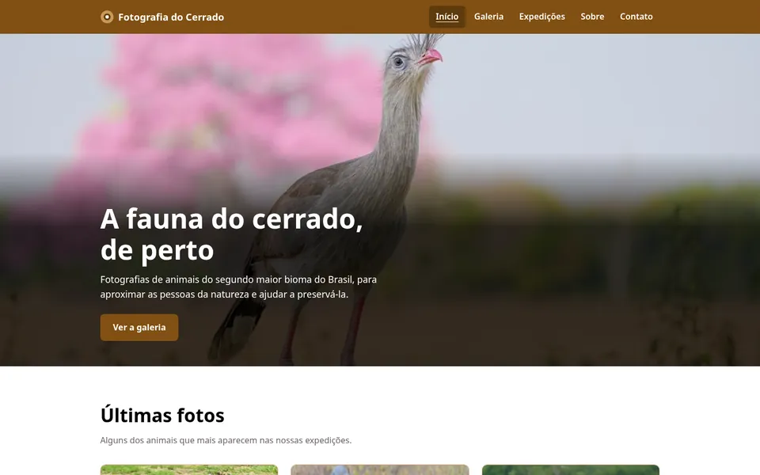
Business website
Wildlife photography company, with a filterable gallery, expeditions and contact. The palette comes from the Cerrado itself and every color was checked against the WCAG contrast rules.
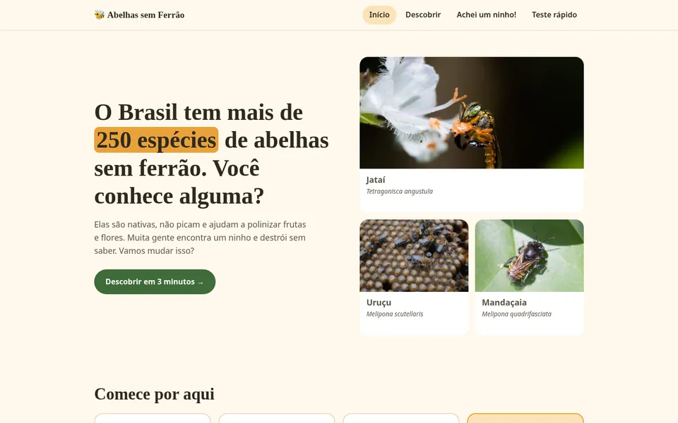
Educational website
For people who have never heard of Brazil's native stingless bees: a 3-minute tour, what to do if you find a nest and a quick quiz. It grew out of a Design Thinking exercise.
Café Aurora is a café that doesn't exist, from another dimension. Switch parts of its website on and off: it changes instantly, and so does the price.
Project, from $3,080
Reference prices, as in “Build your website”. The monthly plan (from $29) is separate.
I want a website like thisCafé Aurora started as a university assignment, in the Interface Development course. Open full screen
What everyone asks before starting. Whatever applies to your project comes in writing in the proposal.
A rough guide: a business website takes 2 to 3 weeks, a tool with a dashboard 1 to 2 months and an installable app 2 to 3 months. The exact timeline, agreed for your project, comes in the proposal.
Half when you accept the proposal and half before the website goes onto your domain, by international transfer through Wise, in US dollars. For projects from $5,500, you can split it into three: 40% at the start, 30% when the preview is approved and 30% at launch.
Yes: the website runs on our server, and the monthly plan keeps it online. There are two plans. Online ($29 a month) covers the server, security padlock, domain setup and backups. Care ($59 a month) has all that plus updates and small text and photo changes. Pay for the year up front and get 2 months free.
Yes. With the dashboard you change text and photos without calling anyone, and you get a quick training session and a guide. Tools and apps include it; on a business website it's an extra $650. New pages are still done by us.
You do. By default it's registered in your or your company's name, with your country's domain (.jp, .kr, .tw, .sg, .com or any other), and we set everything up. If you'd rather not deal with it, we handle registration and renewals for you.
They're yours: whatever you send us, the text and images we create for the website (once paid) and the data of the people who use it, such as orders and sign-ups. The code, layout and design belong to Linu Sites; you use the website while the monthly plan is active.
You get your text, images and data in a file, ready to take with you. If you want to take the website as it is, its code can be bought for the same price as the project. Nobody is locked in.
Build your website and instantly see an estimated price and timeline. Then send it by WhatsApp or email: the message is already written. It can be just an idea: the reply comes with questions and next steps. We're based in Brazil (UTC−3): replies come within one business day, and video calls can be scheduled for your morning or evening.
Choose the type to see an estimate
Reference price, “from”. Anything more goes into the proposal, in writing, with the exact price. The domain (about $15 a year) is separate.
Monday to Friday, 9:00 to 21:00 Brasília time (UTC−3).
—